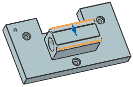

Chamfer edges of the pivot boss
-
On the Feature toolbar, select Chamfer
 .
.
-
In the Chamfer dialog box, from the Cross Section list, select Symmetric.
-
In the Distance box, type 20.
-
Select the front and back bottom edges of the pivot boss.

-
Click OK.